창원 복고 가족사진 — 사진 속에서 다시 만나는 젊은 부모님
2026-10-23 발행
창원 복고 가족사진은 옷을 갈아입는 데서 시작합니다. 지금 입고 온 옷을 벗고, 할머니와 할아버지가 젊었을 적 입던 모양의 옷으로 갈아입는 동안 가족은 잠깐 다른 시대의 사람이 됩니다. 거울 앞에서 서로를 보고 웃는 그 몇 분이 이 촬영에서 제가 가장 좋아하는 시간입니다.
복고 가족사진을 찾으시는 이유는 대개 비슷합니다. 부모님이 젊었을 때의 사진이 한 장도 없어서, 혹은 있다 해도 너무 작고 바랜 흑백 사진 한 장뿐이라서. 그 한 장을 다시 찍어 드리는 일이라고 생각합니다. 지금의 얼굴로, 그러나 그 시절의 옷을 입고.
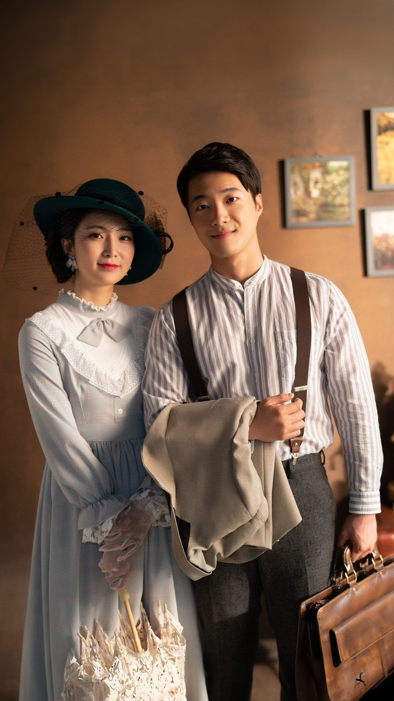
첫 자리는 부부 두 사람입니다. 온 가족이 오셔도 시작은 두 사람부터 찍습니다. 자녀들이 옆에서 옷매무새를 봐 드리고, 그 장면이 또 하나의 사진이 됩니다. 개화기 의상은 여성복의 경우 저고리 길이가 짧고 치마가 길어서, 앉거나 서는 자세에 따라 실루엣이 크게 달라집니다.
복고 가족사진은 어떤 옷을 입고 찍나요? 크게 두 갈래입니다. 하나는 개화기로 불리는 시기의 양복과 개량 한복이고, 다른 하나는 지난 세기 중반의 생활복입니다. 첫 번째가 사진으로 보았을 때 가장 낯설고, 그래서 가장 사진다운 결과가 나옵니다. 남성은 조끼와 서스펜더, 중절모와 회중시계를, 여성은 긴 치마와 레이스 장갑과 모자를 함께 씁니다.
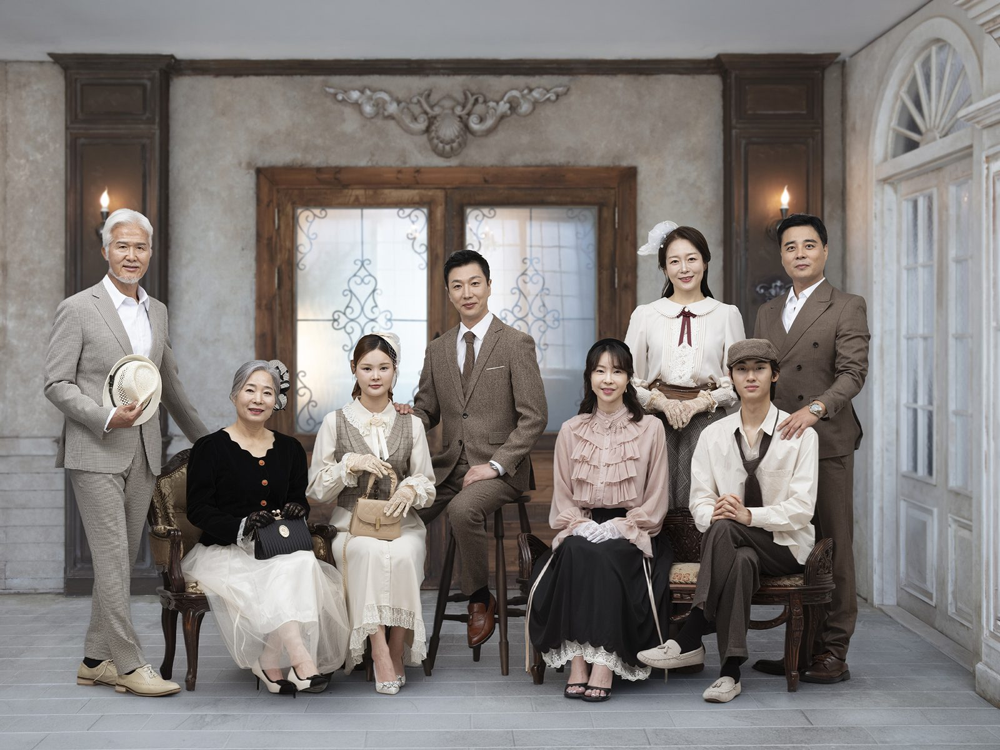
두 번째는 가족 전원입니다. 이 자리에서 늘 하는 말이 있습니다. "다 같이 같은 시대에 사는 사람처럼 보이게 하자." 손자와 할아버지가 같은 모양의 조끼를 입으면 웃음이 먼저 나옵니다. 그 웃음이 사진에 남는 것이 목적입니다. 억지로 정색하지 않으셔도 됩니다.
옷은 의상실에서 함께 고릅니다. 열 명이 넘으면 색을 세 덩어리로 나누는 편이 좋습니다. 짙은 남색 계열, 베이지와 아이보리, 그리고 한두 사람의 붉은색. 붉은색은 한 사람에게만 주어야 사진에서 시선이 모입니다. 모두가 붉으면 아무도 눈에 띄지 않습니다.
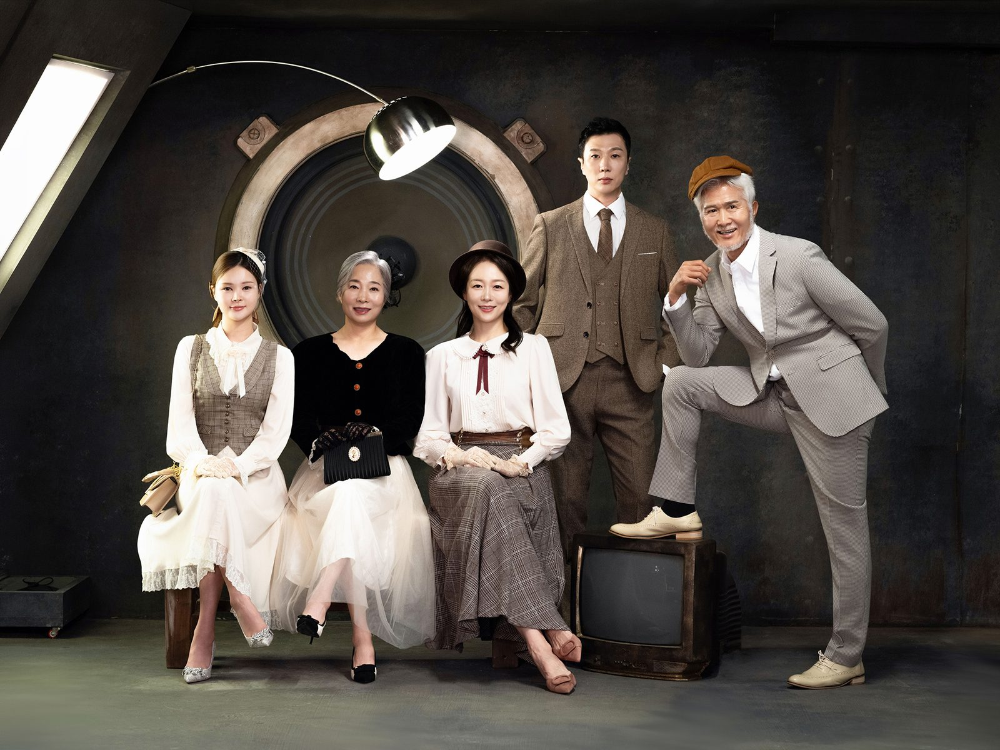
세 번째는 앉은 자리입니다. 인원이 많을 때는 전원을 세우면 뒷줄 얼굴이 작아집니다. 그래서 앞줄은 앉고 뒷줄은 서고, 한두 사람은 옆으로 비스듬히 서게 합니다. 이 배치는 제가 매번 손으로 그려서 보여 드립니다. 어르신은 가운데 의자에, 아이들은 앞바닥에.
창원에서 복고 가족사진은 언제 찍는 게 좋을까요? 기념일이 정해져 있지 않다면 평일 오전을 권합니다. 옷을 고르고 갈아입는 데만 한 시간이 넘게 걸리기 때문입니다. 주말 오후는 예약이 몰려서 서두르게 됩니다. 인원이 여덟 명을 넘으면 시간을 넉넉히 잡아 두시는 편이 좋습니다.
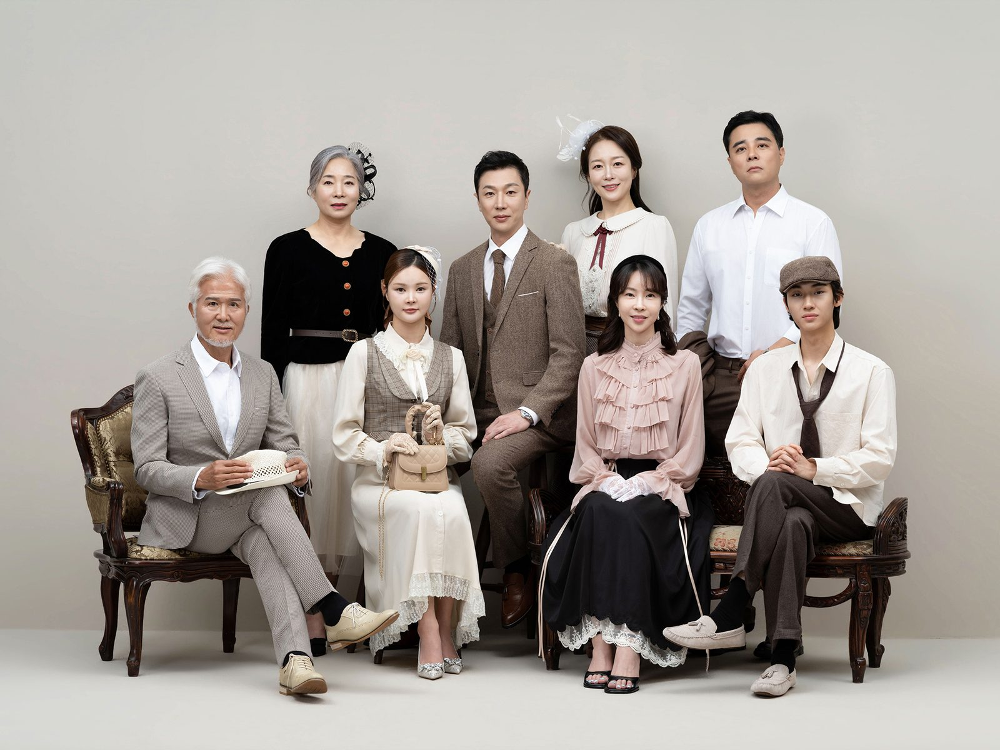
네 번째는 소품을 든 자리입니다. 회중시계, 부채, 손지갑, 나무 의자. 소품은 손이 어디로 갈지 정해 주는 역할을 합니다. 손이 어디 둘지 몰라 어색해지는 순간이 사진에서 가장 흔한 실패인데, 소품 하나가 그 문제를 없앱니다. 어르신께는 지팡이 대신 나무 의자를 드리는 편입니다.
아이들은 이 촬영을 특히 좋아합니다. 옷이 평소와 다르고, 모자를 쓰고, 어른들이 웃고 있기 때문입니다. 다만 아이의 집중은 길지 않습니다. 그래서 아이가 있는 가족은 아이 컷을 먼저 찍고, 아이가 쉬는 동안 어른 컷을 찍는 순서로 진행합니다.
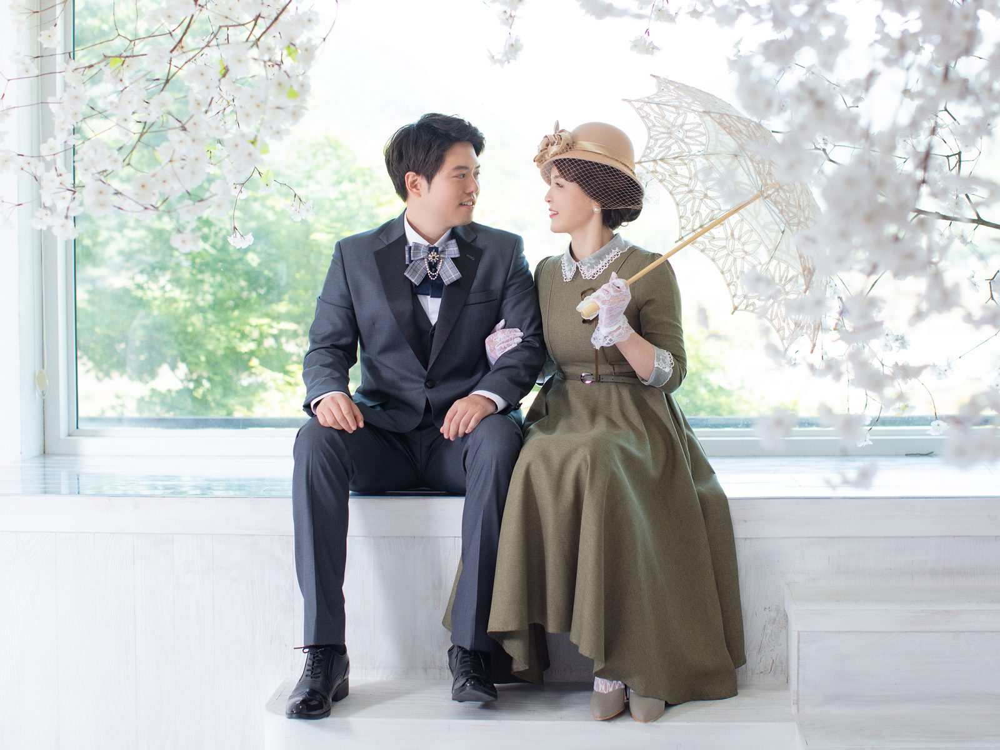
다섯 번째는 밝은 배경입니다. 복고라 해서 어두운 배경만 있는 것은 아닙니다. 붉은 벽, 노란 벽, 무늬 벽지. 배경을 밝게 하면 옷의 색이 살아나고 얼굴이 환해집니다. 반대로 어두운 배경은 옷의 질감과 실루엣을 살립니다. 두 가지를 한 번에 찍어 두면 사진첩에 리듬이 생깁니다.
의령 야외에서도 찍을 수 있습니다. 의령사진관 마당과 그 앞의 돌담, 그리고 인근의 조용한 길입니다. 실내와 야외를 같은 날 이어서 찍으면 옷은 그대로인데 빛이 완전히 달라집니다. 야외 촬영은 비가 오면 일정을 옮겨야 하니 예약하실 때 여유 있는 날짜를 함께 정해 두시는 편이 좋습니다.
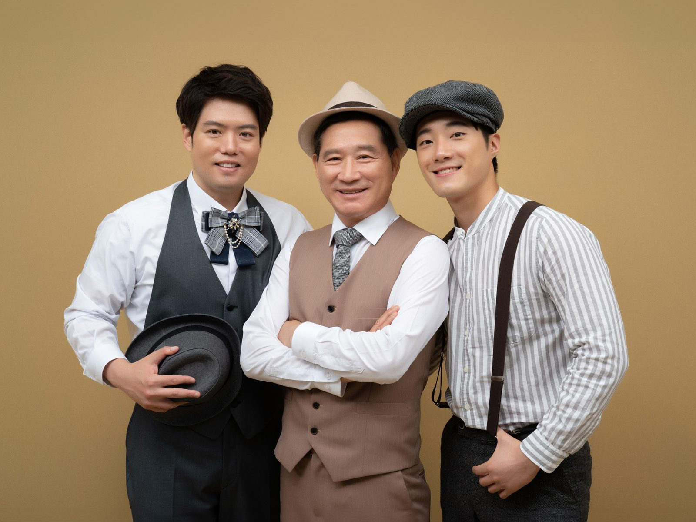
여섯 번째는 조명을 바꾼 자리입니다. 스튜디오 조명은 색을 입힐 수 있습니다. 붉은 빛을 올리면 베이지 옷이 살구빛이 되고, 회색 옷이 자줏빛이 됩니다. 사진을 처음 보시는 분들은 같은 날 찍은 것인지 물으십니다. 그만큼 인상이 달라집니다.
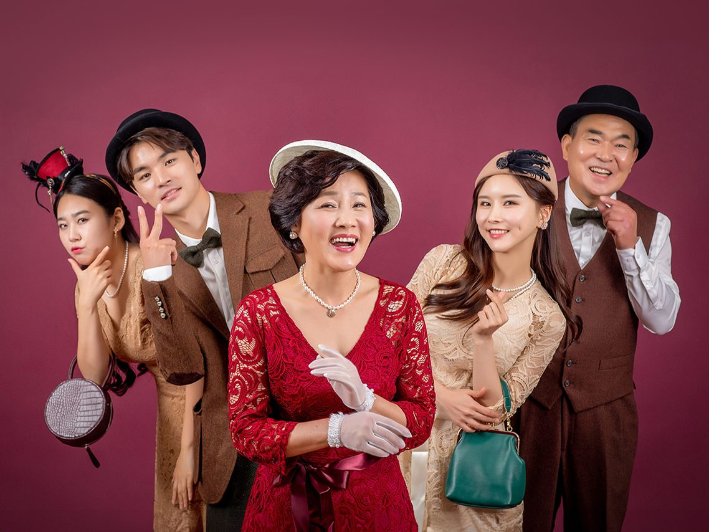
일곱 번째는 단체 자리입니다. 일곱 명이 넘으면 두 줄로 나눕니다. 앞줄은 앉고 뒷줄은 서고, 가운데 한 사람을 살짝 앞으로 내보냅니다. 이때 발끝을 모두 같은 방향으로 두면 사진이 정돈됩니다. 반대로 발끝을 조금씩 다르게 두면 자연스러워집니다. 어느 쪽이 좋은지는 가족의 성격에 달려 있습니다.
복고 가족사진은 흑백으로 마무리하는 경우가 많습니다. 색을 빼면 옷의 무늬와 얼굴의 선이 남습니다. 컬러로도 한 장, 흑백으로도 한 장. 사진첩에서 두 장을 나란히 놓으면 같은 날의 다른 표정이 됩니다. 흑백 변환은 촬영 후에 함께 상의해서 정합니다.
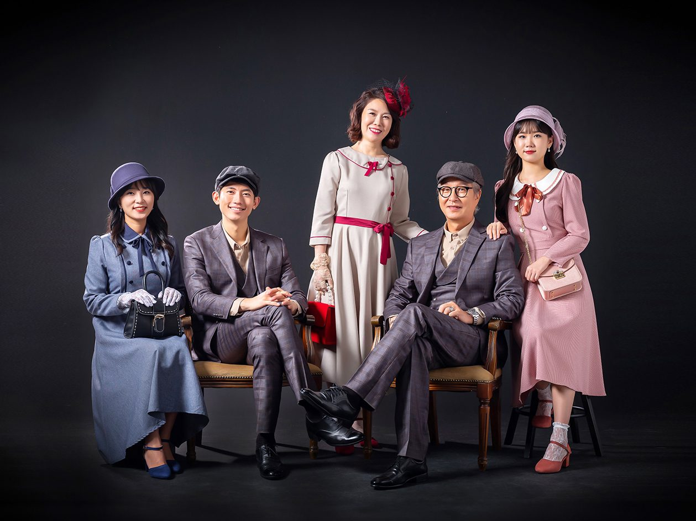
여덟 번째는 정면 자리입니다. 이 자리는 표정을 만들지 않습니다. 그냥 앞을 보게 하고, 제가 숫자를 세어 셋에 누르는 방식입니다. 처음 두 장은 어색하고, 세 번째부터 얼굴이 풀립니다. 그래서 이 자리는 넉넉히 다섯 장을 찍습니다.
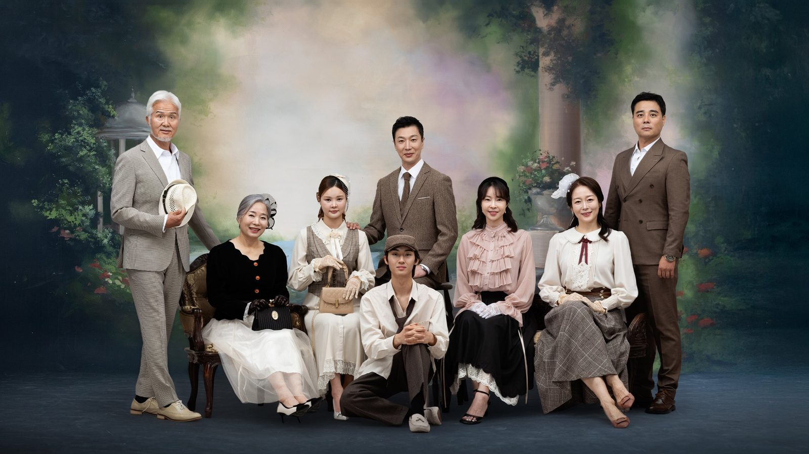
아홉 번째는 야외입니다. 의령사진관 마당에는 돌담과 나무가 있고, 그 너머에 펜션이 있습니다. 김작가사진이야기펜션은 의령사진관 옆 부지에 있는 독채 펜션입니다. 촬영을 마치고 하루 묵어 가시는 가족도 있습니다. 마당 촬영은 오전 빛이 가장 고릅니다.
가격과 소요 시간은 인원과 의상 수에 따라 달라집니다. 정확한 금액과 걸리는 시간은 예약하실 때 인원을 알려 주시면 그 자리에서 안내드립니다. [확인 필요] 촬영본 전달 방식과 액자 제작 기간도 함께 안내드립니다.
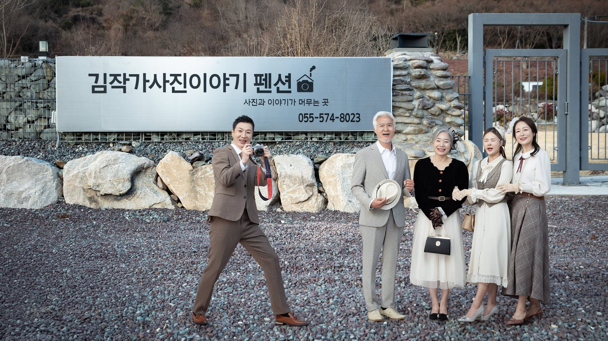
열 번째는 창가입니다. 야외에서 들어와 창가에 서면 빛이 옆에서 옵니다. 이 빛은 얼굴의 굴곡을 살리고 옷의 주름을 지워 줍니다. 하루의 마지막 컷을 여기서 찍는 경우가 많습니다. 다들 옷이 조금 풀리고 표정이 편해진 상태라, 이때 나오는 사진이 가장 자연스럽습니다.
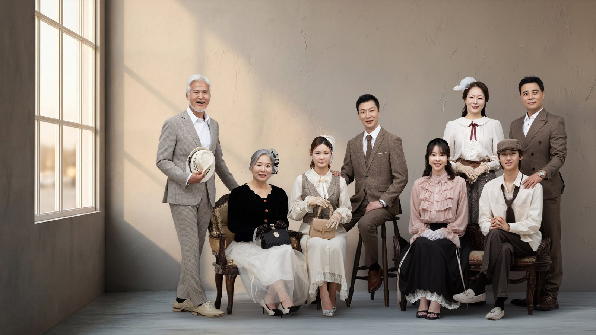
열한 번째는 전원 컷입니다. 이 컷은 마지막에 찍습니다. 다들 자리가 익숙해져 있어서 서로 손을 잡거나 어깨를 감싸는 자연스러운 동작이 나옵니다. 저는 이 컷을 위해 항상 시간을 따로 남겨 둡니다. 가족사진에서 가장 오래 남는 것은 이 한 장입니다.
사진은 촬영한 날의 기분을 오래 보관합니다. 그래서 저는 촬영 전에 꼭 묻습니다. "오늘 이 자리에 오신 이유가 무엇인가요." 그 답에 따라 자리의 순서와 표정을 다르게 합니다. 누군가를 그리워하는 자리라면 웃음만 담지는 않습니다.
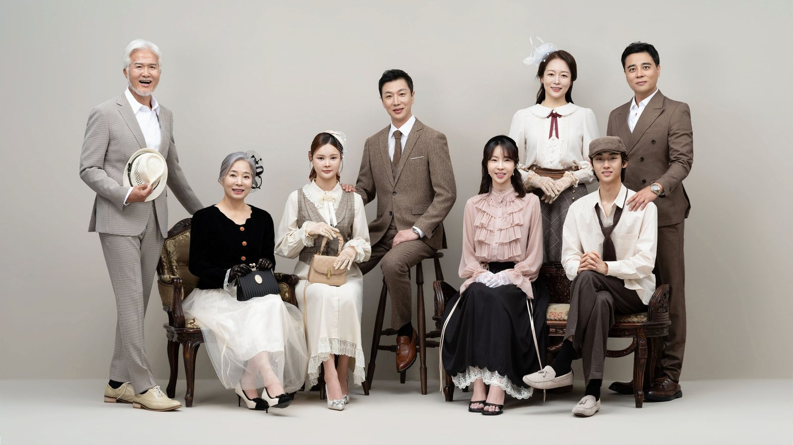
마지막은 정리하는 자리입니다. 옷을 벗고 원래 옷으로 갈아입기 전에, 사람들이 서로에게 하는 말을 듣습니다. "오늘 진짜 즐거웠다", "아버지가 이 옷이 잘 어울린다." 그 말을 들으며 사진을 정리합니다. 복고 가족사진은 옷을 입는 촬영이지만, 남는 것은 그날 가족이 서로에게 한 말입니다.
이 글의 사진은 촬영 스타일을 보여 드리기 위한 예시 이미지입니다. 실제 고객의 사진이 아닙니다.
사랑이야기 스튜디오 창원점 / 주소: 경남 창원시 성산구 원이대로 652, 상남동 롯데빌딩 2층 / 전화: 창원점 055-287-8022, 의령점 055-574-3706 / 홈페이지: lovestorykim.com / 인스타그램: @lovestorychangwon / 운영: 김작가
자주 묻는 질문
Q. 복고 가족사진은 몇 명까지 찍을 수 있나요?
A. 스튜디오 수용 인원에 따라 다르지만 열 명 안팎까지는 한 자리에서 찍습니다. 그보다 많으면 두 자리로 나누어 찍고, 마지막에 전원 컷을 따로 담습니다.
Q. 옷은 전부 대여하나요?
A. 개화기 의상과 소품은 의상실에서 대여합니다. 사이즈를 미리 알려 주시면 촬영 전에 맞춰 둡니다. 신발은 개인 것을 쓰시는 편이 편합니다.
Q. 아이가 어려도 가능한가요?
A. 돌 이전 아기도 찍습니다. 다만 아이 컷을 먼저 찍고 어른 컷을 뒤에 찍는 순서로 진행합니다. 아이가 잠들면 그때가 아이 사진의 가장 좋은 순간입니다.

오시는 곳
사랑이야기창원점
- 주소 경남 창원시 성산구 원이대로 652, 상남동 롯데빌딩 2층
- 전화 055-287-8022
- 영업시간 오전 10:00 ~ 오후 7:00
- 예약 전화 상담 · 카카오톡 채널
- 주차 건물 지하 주차장
김작가사진이야기 의령
- 주소 경남 의령군 궁류면 청정로 1188
- 전화 055-574-3706
- 영업시간 오전 10:00 ~ 오후 7:00
- 예약 전화 상담 · 카카오톡 채널
- 주차 전용 주차장
이 글에 한마디
댓글창을 준비하고 있습니다. 그동안 궁금한 점은 카카오채널로 남겨 주시면 바로 답변드립니다.
카카오채널로 한마디 남기기